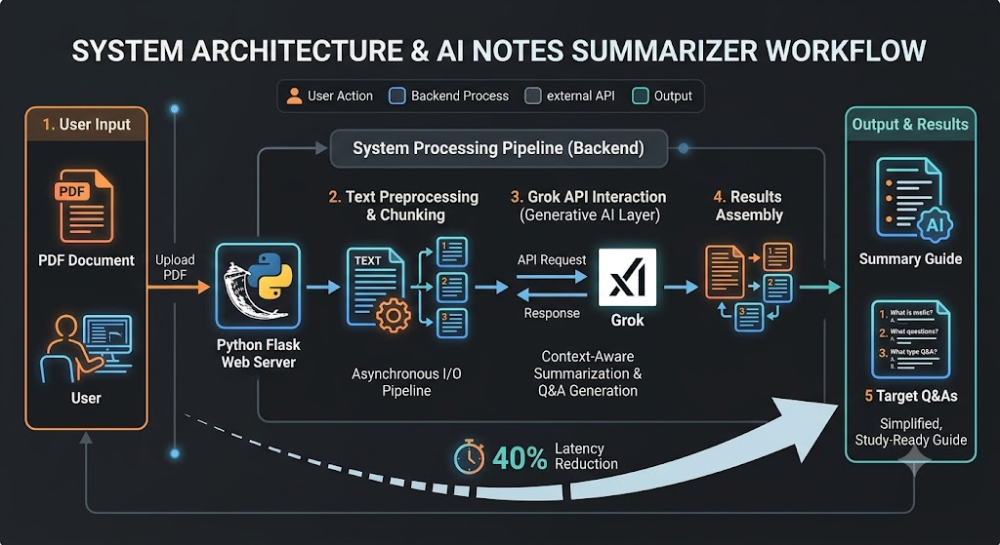

An engineering deep-dive into overcoming API timeouts and optimizing processing context windows via asynchronous chunking.
This application ingests dense, long-form academic lecture notes and generates instantly actionable study guides. By leveraging an asynchronous text preprocessing pipeline built with a Python/Flask backend, the system safely chunks raw document streams to guarantee rapid response times, a 40% latency reduction, and seamless mitigation of upstream LLM timeout constraints.

Users upload raw multi-page PDF documents via an intuitive interface. Client-side JavaScript acts as the first line of defense, validating payloads and checking format integrity before establishing an asynchronous request to the server layer.
Large academic text files easily breach simple sequential connection timeouts. The Python/Flask backend acts as a parsing controller—extracting string streams and systematically indexing them into logical text intervals with overlapping boundaries to maximize context preservation during processing.
The system orchestrates multi-turn context delivery to the Grok API layer. The custom engine instructs the neural layers to map relationships out of the chunked summaries and systematically generate both a fluid thematic study guide alongside exactly 5 high-yield, concept-testing questions.
The structured JSON return objects are intercepted by the asynchronous backend layer, parsed for stability, and passed to the frontend runtime. The DOM updates on-the-fly, serving students a cleanly formatted, highly scannable output without a full page refresh.